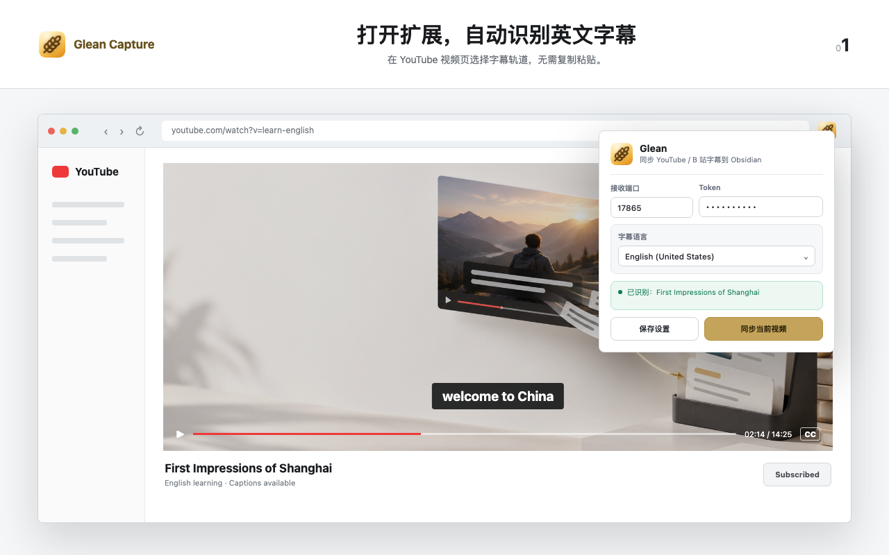

打开扩展，自动识别英文字幕
B 站英文字幕，也能直接同步
字幕已送达你的 Obsidian
在 YouTube 视频页选择字幕轨道，无需复制粘贴。
过滤机翻字幕，只保留可用的英文轨道。
视频信息、字幕文件和学习入口自动整理完成。
01


welcome to China
The future belongs to those who keep learning.
▶02:14 / 14:25CC
Glean同步 YouTube / B 站字幕到 Obsidian
已识别：First Impressions of Shanghai已识别：How learning changes the way we think

同步成功
字幕已保存到 Glean
现在可以逐句精听、听写、查词和复习。